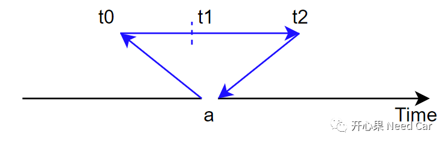
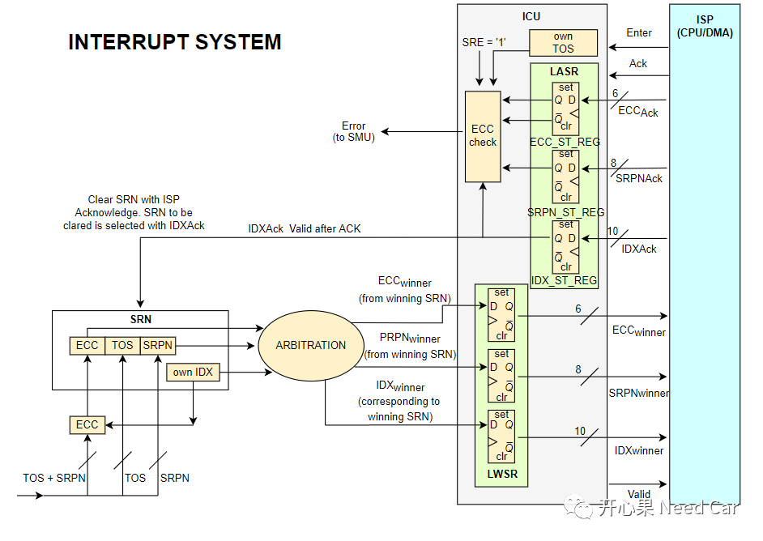
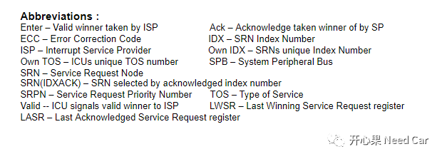
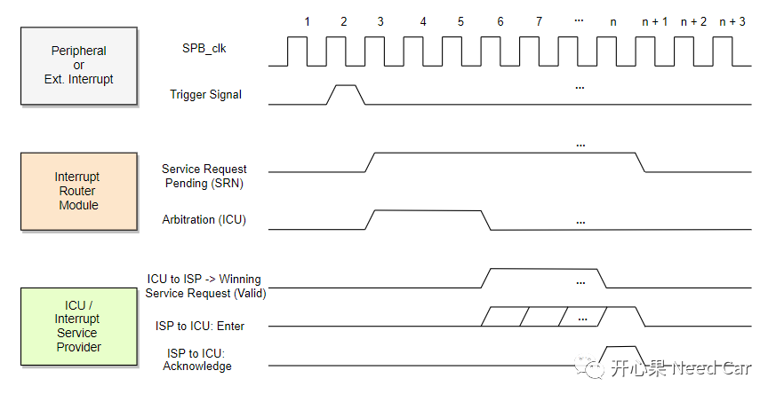
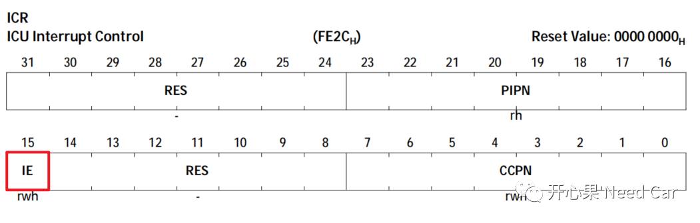
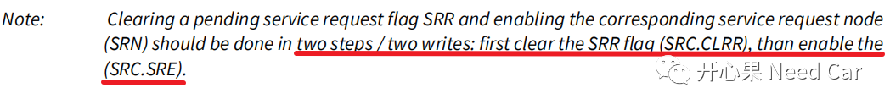
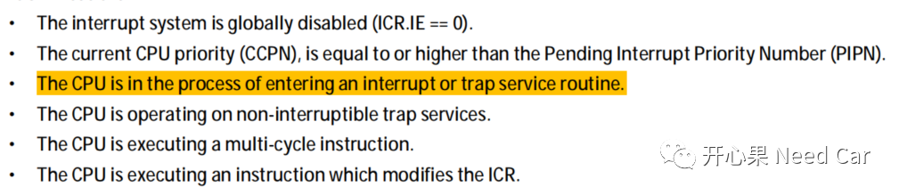
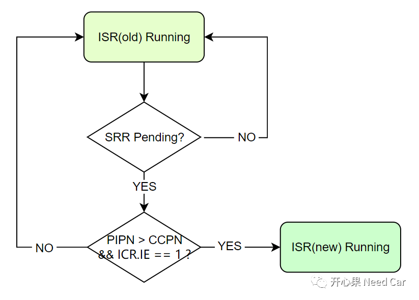

开心果 Need Car · 2022-08-24T11:31:00+08:00 · 微信原文
之前和大家聊过Aurix的中断，可以参考前文英飞凌tx397:手撕中断，让你理解得更明白。在聊中断仲裁过程之前，问一个问题：“同一个中断，在执行其中断例程的过程中，如果此中断事件再次发生，当前执行的中断例程会被打断吗？如果不能被打断，为什么呢？”。细化一下问题，如下图：
在主程序执行过程中，在a点发生中断事件；
程序跳转到中断例程中执行，在此中断例程执行的过程中（eg:t1时刻），此中断再次发生（中断请求标志位再次被挂起），当前执行的中断例程会被打断吗？

大家都会说“不能”。但是为什么不能呢？为什么不能像递归函数那样不断地调用自己呢？本文，我们聊聊这个问题。
1、中断系统
搞清楚中断的仲裁过程，我们先熟悉一下Aurix的中断系统，如下所示：

（一）缩写词

（二）仲裁机制

Cycle 1:没有中断请求；
Cycle 2:某个外设模块触发中断请求，即：SRC(Service Request Control Register)寄存器的SRR(Service Request Flag)置位，这个触发动作由SRN节点发出一个脉冲产生；
Cycle 3-5: 3个时钟周期，ICU即可完成仲裁，通过SRN的SRPN，确定哪个SRN可以优先被处理；
Cycle 6: ICU将赢得仲裁的SRN信息（SRPN, ECC, SRN Index）发送给对应的中断服务提供者ISP（CPU或者DMA）；
Cycle 7 - n-1:如果有新的SRN请求中断，ICU再次仲裁，如果新的SRN中断请求优先级高于上次的SRN请求，则将新的SRN请求信息告知ISP；
Cycle 6- n-1: ISP获取赢得仲裁的SRN信息，也称为Enter;
Cycle n:ISP响应（Ack）中断服务，将SRN的SRPN, ECC, SRN Index信息反馈给ICU。此时开始执行中断服务例程，同时，ICU将状态切换到“服务不可用”状态，即：中断例程执行过程中，不可打断，这是Tricore架构默认的处理方式。如果允许中断嵌套，则需要在中断例程执行前重新使能全局中断，即：使用ENABLE指令使能全局中断，这样，中断例程执行过程中，更高优先级的中断才能打断当前中断例程；
Cycle n+1:ICU对ISP的响应信息进行检查，如果检测到错误信息，会告知SMU，触发Trap或者复位动作；
Cycle n+2:中断例程执行完成，如果有中断请求，新的一轮仲裁开始。


2、Tricore架构中，中断不可打断的几个条件


某中断例程ISR（Interrupt Service Routine）正在执行；
在此期间，新的中断被挂起（SRR：Service Request Flag = 1）；
判断中断是否可以嵌套（ICR.IE == 1?）,如果中断可以嵌套，且挂起的中断优先级PIPN（Pending Interrupt Priority Number）比正在执行的中断例程优先级高CCPN（Current CPU Priority Number ），则当前正在执行的中断例程被打断，执行新的中断例程ISR(new)，中断发生抢占。
Infineon-AURIX_TC3xx_Part1-UserManual-v01_00-EN.pdf
Infineon-AURIX_TC3xx_Architecture_vol1-UserManual-v01_00-EN.pdf
往期精彩回顾